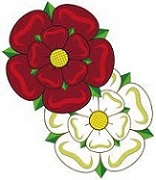
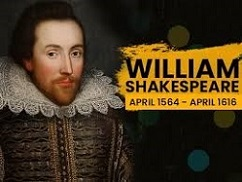

Lecture 4
Tudor England (15th–16th Centuries)
The 14th–16th centuries was not always a peaceful time for England. Magna Carta, which limited royal power and established common law, formed the basis of many conflicts between the king and his vassals in the following century in the country. Catastrophic events, wars, social unrest were some of the key events, but there was also a highly remarkable period in the English history connected with flourishing of science, arts and literature.
England in the 14th Century
The 14th century in England saw the Great Famine. In the spring of 1315 unusually heavy rain began in much of Europe. Throughout the spring and summer, it continued to rain and the temperature remained cool. These conditions caused widespread crop failures. The price of food began to rise. Salt, the only way to preserve meat, was difficult to obtain because it could not be extracted through evaporation in the wet weather. All segments of society from nobles to peasants were affected, but especially the peasants who were the overwhelming majority of the population and who had no reserve food supplies. The height of the famine was reached in 1317 as the wet weather continued. Finally, in the summer the weather returned to its normal patterns. By now, however, people were so weakened by diseases such as pneumonia, bronchitis, and tuberculosis, and so much of the seed stock had been eaten, that it was not until 1325 that the food supply returned to relatively normal conditions and the population began to increase again.
The epidemic of plague, commonly known as the Black Death, covered southern England in 1348 and by the end of 1349 it had spread north to central Scotland, carrying death and destruction. It interrupted a process that had been transforming the villages for nearly a hundred years. By the time of the Black Death many of the serfs had come to an arrangement with their lords to pay money instead of services. The plan was convenient for both sides. The effects of the plague were momentous. The great decrease in population increased wages, gave more freedom to the serfs, and caused the land to decline in value. It disrupted industry and trade and depopulated whole villages. By 1350, the Black Death had reduced England’s population by about a third. About 1,000 villages were destroyed or depopulated.
In 1337 the Hundred Years’ War started between England and France. The high taxation necessary to finance the war and the Black Death led to such extreme hardship for the peasant class that there was a revolt in 1381. Sixty thousand people led by Wat Tyler marched from Kent to London. The rebels destroyed the Royal Courts, several prisons, killed the king’s men, beheaded the archbishop of Canterbury. On June 14 the rebels met the king, Richard II, who was only 14 years of age at the time, and handed their demands. The king promised to make everyone free man and abolish feudal dues. During the second meeting with the king Wat Tyler was treacherously killed and the rebels dispersed in confusion hoping that Richard would respect his promises.
However, the king deceived the rebels and crushed the revolt. But though the rising failed, it led to some improved conditions for the peasant class (the serfdom was abolished, the serf was gradually becoming a free peasant) and it was the first step towards the ending of the feudal system in England.
In the 14th century new economic relations began to take shape within the feudal system. As England’s wealth was its land, farming and cattle breeding were the main rural occupations. Corn and dairy goods were the main articles of agricultural produce. England’s most important industry, textiles, was also based on the land, producing the finest wool in Europe. Wool trade became the most profitable business. A wool sack has remained in the House of Lords since that time as a symbol of England’s source of wealth. As the demand for wool and cloth rose, the country began to export woollen cloth produced by the first big enterprises – the manufactures. Landowners evicted peasants and enclosed their lands with ditches and fences, turning them into vast pastures.
The growth of trade promoted the growth of towns. London, the residence of the Norman kings, became the most populous town of England. Many towns got ‘charters of freedom’. People who lived inside the town walls were free from feudal rule. It was the beginning of a middle class and capitalist economy. In towns, the central role was played by guilds, brotherhoods of merchants or artisans. Each guild tried to protect its own trade interests.
The Hundred Years’ War
The term “Hundred Years’ War” (1337–1453) is used for a series of wars which lasted, including intervals of peace, for more than a hundred years. The causes of the war were both political and economic.
The struggle resulted from the English possession of territory in France, which began with William the Conqueror, and from the French desire to drive out the invaders. King Edward III of England claimed the French throne because he was a grandson of the late French king and wanted to get back the English possessions in France which had already been lost. One more reason was that English merchants traded with free towns of Flanders but the French feudal lords seized those free towns, deprived England of its traditional wool market. England could not afford the destruction of overseas trade. The threat to their trade with Flanders persuaded the English merchants that war against France was inevitable.
The beginning of the campaign was rather successful for England because of its military supremacy. Due to the newly invented cannons the English defeated the French army in several battles, regained their lands on the continent. But then the territories gained at the beginning of the war were lost. The French victory marked the end of a long period of instability that had started with the Norman Conquest, when William the Conqueror added “King of England” to his titles, becoming both the vassal to (as Duke of Normandy) and the equal of (as king of England) the king of France.
When the war ended, England lost its Continental possessions, having only Calais on the continent. The war destroyed the English dream of a joint monarchy and led to the rejection in England of all things French. English became the official language in 1362 and French was no longer used for teaching from 1385.
The 14th century gave the world Geoffrey Chaucer, a writer of the new class, the bourgeoisie. He was the first to break away from mediaeval forms and paved the way to realism in literature. His greatest work, The Canterbury Tales, is a series of stories told by a number of pilgrims on their way to Canterbury.
The Wars of the Roses
The Wars of the Roses (1455–1485) started on the background of England’s defeat in the Hundred Years’ War, after the end of which the feudal lords and their hired armies came home from France. They were greatly dissatisfied with their losses and could not adjust themselves to the serious changes in the economic life of the country, which had occurred during the long struggle between England and France. For these nobles and their bands of soldiers war had become a profession. They were unfit for peaceful work. Because of the lack of powerful central government and the reign of anarchy, a general outbreak of feudal strife was inevitable.
Two most powerful feudal families, the House of York and the House of Lancaster, started a series of wars fighting for the possession of the throne. That struggle turned into a civil war which was named the Wars of the Roses after their emblems – the white rose, which was the emblem of the House of York, and the red rose, which symbolized the House of Lancaster. The various noble families related to these two Houses formed ranks behind them. Towns loyal to Yorkist families closed their gates to all Lancastrians. The court shut out all Yorkists. London was filled by armed followers of both parties.
The battle of Bosworth, fought on August 22, 1485 ended the Wars of the Roses, which lasted 30 years, and with them the whole historic epoch in England. Henry of Richmond or Henry Tudor won this battle against Richard III. The latter was killed in battle. “The king is dead. Long live the king!” is a strange English saying. It means that as soon as a king is dead, another must take his place. Henry Tudor became Henry VII. Moreover, Henry was wise enough to marry the heiress of the House of York, uniting the rival houses and forming a new monarchy, the Tudor monarchy. It was supported by the new nobility and the emerging bourgeoisie, clothiers, as the wool capitalists came to be called, that is those people, who valued security which was necessary for the development of the economy, and who feared the resumption of feudal wars and anarchy.
Henry VII’s victory in 1485 conventionally marks the end of the Middle Ages in England and the start of the Early Modern period (Kings & Queens of England: Episode 3: Tudors).
The Start of an Absolute Monarchy
The Tudor period usually refers to the historical period between 1485 and 1558, which coincides with the rule of the Tudor dynasty in England.
Henry VII felt that he had to restore the English Crown to its former position. The Wars of the Roses had undermined agriculture, trade and industry. Moreover, they had undermined confidence in monarchy as an institution: the king was seen unable or unwilling to protect the rights of all his subjects. The royal government was manipulated by individuals who fell in and out of favour. The king had to restore his right not only to reign, but also to rule.
Crushing down the old nobility, confiscating the lands of the defeated, Henry VII began to create a new nobility coming from the upper layers of society and directly dependent upon the Crown. Just as the king required the merchants, who supplied him with the money to govern, so did the merchants need a powerful king, who guaranteed their commercial activities against feudal anarchy. The peasantry too supported the Crown, for instead of many evils, feudal violence and lawlessness, it preferred one evil – the king.
King Henry VII established an absolute monarchy. Remembering the lessons of the civil war he forbade any nobleman to keep armed men. At the same time, the king built a regular army that obeyed nobody but him. Henry strengthened England’s prestige and wealth by commercial treaties that restored the country’s position in the European market. Realising that England’s future depended on international trade, he freely spent money on building ships for a merchant fleet.
Henry VII made peace with France. In order to avoid military conflicts with Spain and Scotland he married his elder son Arthur, and after his death, Henry, to the Spanish princess Catherine of Aragon, and his daughter Margaret to King James IV of Scotland. It was also during his reign that England started its famous policy of ‘divide and rule’, preventing any country of Europe from becoming overwhelmingly strong.
Under Henry VII’s reign England took an interest in North America. Although Henry refused to help Columbus who approached him in search of financial support, he backed the voyages of John Cabot, who in 1497 discovered Newfoundland and sailed along the North American coast.
Henry VII was known for the efficiency of his financial and administrative policies. He introduced new methods of government concentrating all power in his hands. The ministers were personally selected by the king for their ability and loyalty. Henry VII was preoccupied with utmost economy. In a relatively short period of time he managed to establish a system of checks, the record of which never left his hands. He personally looked through all the record books and signed every page. When Henry VII died in 1509, he left about 2 million pounds, a vast sum equal to at least 15 years’ ordinary revenue at the time.
The 15th century was the time of significant cultural outburst in England. In 1438 Johannes Gutenberg printed in Germany the first European book known as The Gutenberg Bible. The idea of printing quickly spread all over Europe. In 1476, the first English printer William Caxton printed the first English book, which made a great contribution to standardizing the English language. The concept of the norm had not existed before; it only appeared and was accepted as printed books spread all over England. The development of the printing technique promoted the spread of literacy and the literary norm.
The 15th century saw the increase of universities in number and scope. Oxford and Cambridge were joined by the University of St. Andrews in 1413, the University of Glasgow in 1451 and the University of Aberdeen in 1495.
The Reformation
By the beginning of the 15th century the Roman Catholic Church had become one of the greatest supporters of feudal power in England and one of the greatest feudal landowners. At the beginning of the 16th century it became evident that the existing feudal relations of production began to hamper economic progress both in industry and agriculture. Neither the English king, who was an absolute monarch, nor the English bourgeoisie, competing with their rivals in Europe to secure the expanding overseas colonial trade, could any longer afford to let the Pope intervene in English affairs. A major upheaval in this respect was the Reformation of the 16th century, the establishment of the Anglican Church with the king as its head.
The question of Henry VIII’s divorce from his first wife, Catherine of Aragon, was a convenient pretext to break away from Rome. For this purpose Henry VIII called parliament, the so-called Reformation Parliament, which stayed in session seven years and passed several acts, of which the most important was the Act of Supremacy (1534) which recognized the Anglican Church as the official church in the country with Henry VIII as its head. However, the new church differed little from the former Catholic Church, which was a reason for further discontent in the country and which eventually led to the emergence of the Puritan movement in England.
When the Church was brought under the control of the State, the king took the English Reformation further. He ordered to have a careful survey of all Church property, the first properly organised tax survey since the time of the Domesday Book. Henry VIII closed down 823 monasteries and confiscated their property. As Church lands and property were sold to the rising classes of merchants and landowners, Henry’s policy made him popular with them. Monastery buildings were either neglected or destroyed and the stone was used as building material.
The English bourgeoisie having accumulated power and wealth at home was interested in colonial expansion. In those ventures Henry VIII assisted the merchants by granting them charters and patents to trade and to found overseas settlements. He built a modern Royal Navy and got the nickname “Father of the English Navy”. Upon his death, he left a fleet of 53 warships.
He patronized the arts and astronomy and was well-read in theology. At the same time, he was pleasure-seeking and wasteful with money. He spent so much on maintaining a magnificent court and wars, that his father’s money was soon gone. Gold and silver from America added to the economic inflation. In order to raise more money, Henry ordered to reduce the amount of silver used in coins. Although that step resulted in immediate profit, it led to a dramatic rise in prices. Within twenty-five years, the English coinage was reduced to a seventh of its value.
As for Henry VIII’s family life, he married Anne Boleyn who bore him a daughter, the future Queen Elizabeth I. Anne was suspected of adultery and beheaded in 1536 and Henry married Jane Seymour who died in 1537 leaving him a son. Then came Henry’s marriage to Anne of Cleves which was later annulled. Henry’s fifth wife, Catherine Howard, was executed for adultery in 1542. His last marriage was to Catherine Parr who survived him and died in 1548, a year after his death. Henry VIII died of leg ulcer which made his last years a misery.
Henry VIII’s son Edward (King Edward VI), who came to the throne at the age of 9, reigned only 6 years and died of tuberculosis (The Nine Year Old King Who Replaced Henry VIII). The crown went to Mary Tudor also known as Bloody Mary. The only surviving child of Henry VIII and Catherine of Aragon, Mary was a Catholic. She reestablished Roman Catholicism as the nation’s only creed and burned 283 Protestant martyrs. After marrying King Philip of Spain she joined Spain in a war against France and lost the remaining English possession on the continent, Calais (1558). Upon her death, the throne went to her half sister Elizabeth.
Together with the ideas of the Reformation came the ideas of the Renaissance.
The Golden Age of English History
The most significant period of the Renaissance falls on the reign of Queen Elizabeth (1558–1603). The daughter of Henry VIII and Anne Boleyn, she was born out of wedlock and later legitimized by an Act of Parliament. Upon her mother’s execution, she fell out of favour and was allowed to appear at court only when Henry married Catherine Parr. During the reign of her half sister Mary I, Elizabeth was imprisoned in the Tower.
When she came to the throne in 1558, she faced the problems of religious strife, unstable finance, war with France and tense relations with Scotland. She ended the war with France and re-established the Church of England. She imprisoned her rival – Mary, Queen of Scots – and in 1587 had her executed for treason.
Elizabeth was a strong and cautious ruler who set her enemies against one another in order to strengthen the position of England. During her reign, England established itself as a major European power in politics and commerce. England’s success in commerce brought prosperity to the nation and gave a chance to many people of talent to develop their abilities. Merchants formed the East India Company in 1600.
Among the favourites of the Queen was the celebrated traveller Sir Walter Raleigh, who wrote poetry and history. Sir Walter organized expeditions to colonize North America. It was he who introduced tobacco and potatoes to England. He also founded a colony on the American coast which he called Virginia in honour of Elizabeth, the Virgin Queen.
The Queen also favoured Sir Francis Drake, Admiral of Her Majesty’s Navy. Searching for the passage around the north of America he was the first European to sight the west coast of present-day Canada. Then he sailed across the Pacific to the Philippines, and headed across the Indian Ocean for the Cape of Good Hope. In 1580 he returned into Plymouth Harbour with treasure and spices aboard.
For years Elizabeth played a diplomatic game with the rival interests of France and Spain. During the Elizabethan age, preying on Spanish ships became almost a national pastime. By 1580 it was clear that England couldn’t avoid a direct military confrontation with Spain. The Spanish king Philip II began to assemble an enormous fleet to conquer Protestant England. Spain had the strongest fleet of ships called the Invincible Armada, which had never been defeated. In July 1588 the Invincible Armada reached England’s waters. Fortunately for England, Spanish ships were not built for sea-battles, while the English vessels were capable of manoeuvering and fighting under sail: for Drake, the ship was a fighting unit. In 1588 the Queen’s 30 ships led by Francis Drake defeated the enemy fleet, and a terrible storm destroyed what was left of it. The defeat of the Armada was announced in the first newspaper printed in England, specially, for the occasion. The great victory inspired a burst of patriotism that was reflected in the poetry and the drama of the period.
Her reign is considered by many as the Golden Age of English history, producing not only a gallery of authors of genius, some of whom have never been surpassed. England experienced the true cultural reawakening of thought and art. Elizabeth’s court was a magnet, which attracted the most talented individuals of the era. Music, poetry, literature and drama flourished, largely due to the Queen’s love of the arts. Her tastes set the standards for the aristocracy and the rest of society; they fostered an atmosphere in which many of England’s greatest writers found encouragement and financial support. A newly rich merchant class as well as the nobility wanted entertainment and fine arts and were willing to pay for them. Writers, painters, and musicians flocked to London, making it a European cultural centre.
Elizabethan architecture changed the medieval styles, bringing out the beauty of the Renaissance. More houses than churches began to be built. The most significant architectural features of the period were classical symmetry, which was the Elizabethan visual expression of order and harmony. The most famous architect of the period, Inigo Jones, was famous for building the Banqueting House of Whitehall in London.
The Elizabethans created an elaborate system of activities and events to keep themselves entertained. The Queen herself was fond of hunting parties, dancing and music. Musical literacy was expected in the upper class of society. Many Elizabethans made their own music. The lute, virginal, viola, recorder, bagpipe and the fiddle were favoured instruments of that time. A popular form of entertainment in the countryside was the ringing of church bells. In the major towns, official musicians gave free public concerts. The wealthy people hired musicians to play during dinners. The new form of secular music was the madrigal which originally came from Italy. The first English musician to compose madrigals was William Byrd. He founded one of the strongest and most famous musical schools, especially in virginal playing.
It was a period of great advances in medicine, particularly in the study of human anatomy and surgical operations and the study of the universe. Inventions of the period include the graphite pencil, the modern calendar, wind-powered sawmill, and the thermoscope (primitive thermometer).
In natural philosophy, Sir Francis Bacon, completed the break from the mediaeval scholastic method, laid down for the first time the classification of the natural sciences, and prepared the way for modern experimental science. He made a distinguished parliamentary career under Elizabeth I. As a scholar, he wrote mostly in Latin as he believed English would not last. He is also known for his Essays – a collection of brief witty observations on various subjects: reading, education, death, revenge, gardens, etc. The essays are admirably clear and simple and some statements are as memorable as poetry: ‘God Almighty first planted a garden’, ‘Revenge is a kind of wild justice’, ‘Men fear death as children fear to go in the dark’. According to some critics (or fanatics?), it was Francis Bacon who wrote Shakespeare’s plays among other things.
For different reasons Elizabeth never got married, but used this possibility as a diplomatic tool, and came to be known in history as the Virgin Queen. Long before her death, she had transformed herself into a powerful image of female authority, regal magnificence and national pride. She portrayed the image of herself as the humble wife to her superior husband, England, and as a servant of the people.
The Elizabethan Lifestyle
From the beginning to the end of each year, Elizabethans found ways to keep themselves entertained. A major part of the Elizabethan lifestyle was connected with feasts and festivals. Every season of the year had special days that drew the people together to celebrate. One of the greatest festivals of the year was held at Easter time. The Mayday celebration consisted of decorating the maypole and dancing around it. In summer, bonfires were burned and dances were held to celebrate Midsummer’s Eve on June 24. The winter holidays began with Christmas, ran through New Year’s Eve and ended on the Twelfth Night, January 5. These holidays included gifts, bonfires, music and jollity.
Dancing was a popular activity and varied according to a social class. Sports played a major role in the leisure time of the Elizabethan Age. Some of the indoor games included dice, chess, checkers and a variety of card games. Some of the outdoor sports and games included golf, horse racing, swimming, fishing, hunting, fencing, duelling and cricket. While the upper class enjoyed tennis, common people preferred football.
The English Renaissance
The “English Renaissance” is a term often used to describe a cultural and artistic movement in England from the early 16th century to the mid-17th century. It is distinct from the Italian Renaissance in several ways. First, the dominant art form of the English Renaissance was literature, while the Italian Renaissance was driven much more by the visual arts. Second, the English movement came later than Italian.
By the middle of the 16th century, education had spread among the sons of common citizens. The development of literary competence of the language and advances in education were followed by new printing techniques. Accelerated output of printed books made lyric poetry and prose publicly available.
The Tudors badly needed educated diplomats, statesmen and officials. The new learning implied a systematic schooling in Latin and Greek authors.
English poetry and prose burst into sudden glory in the late 1570s. The greatest literature created during the period falls into two categories: poetry and drama. Influenced by Italian sonnets, English writers began introducing complicated poetic structures in both verse and prose.
Elizabethan drama was greatly influenced by Roman authors whose works were translated from Latin into English. University students translated Roman plays into English and tried to write plays of their own imitating the Roman patterns. Elizabeth I was a patron of drama and encouraged its development by frequently attending performances.
The most famous pre-Shakespearian writers of drama were George Peele, Robert Greene (comedies), Thomas Kyd and Christopher Marlowe (tragedies). They belonged to the group known as the “University Wits”. They were graduates of Oxford and Cambridge, men with learning and talent but no money. Most plays were written in verse.
The three great poetic geniuses of that time were Christopher Marlowe, Edmund Spenser, and William Shakespeare. Edmund Spenser’s first poem The Shepherd’s Calendar made him the first poet of the day. He wrote The Faerie Queene, an epic poem describing a 12-day feast honouring the Queen of Fairyland. It was a public poem addressed to Elizabeth I. When Spenser presented ‘his simple song’, as he called it, to the Queen, the success of the poem was tremendous. The Queen rewarded him with a pension of 50 pounds.
Christopher Marlowe was one of the first dramatists of the time. His reputation as a dramatist rests on four plays: Doctor Faustus, Tamburlaine, The Jew of Malta and Edward II.
The University Wits paved the way to William Shakespeare, the greatest of all humanists who marks the highest point of English Renaissance drama. Shakespeare produced most of his known works between 1589 and 1613. His early plays were primarily comedies and histories and are regarded as some of the best work produced in these genres. Until about 1608, he wrote mainly tragedies, among them Hamlet, Othello, King Lear, and Macbeth. In the last phase of his life, he wrote tragicomedies.
Nearing the end of the Tudor dynasty, philosophers like Sir Thomas More and Sir Francis Bacon published their own ideas about humanity and the aspects of a perfect society. As England abolished its astrologers and alchemists, it came closer to reaching modern science with the Baconian Method, a forerunner of the Scientific Method. All of these developments would lead England to reach a level of understanding like never before.
The end of this period in the history of England is marked by the increase of the power of the English monarch. The Tudor dynasty (1485–1603) established a system of government departments, staffed by professionals who depended for their position on the monarch. Parliament was traditionally split into two Houses. The House of Lords consisted of the feudal aristocracy and the leaders of the Church and the House of Commons consisted of representatives from the towns and the less important landowners in rural areas. It was now more important for monarchs to get the agreement of the Commons for policy-making because that was where the newly powerful merchants and landowners were represented.
Test Your Knowledge
- What were the causes of the Great Famine of 1315–1317?
- What were the results of the Black Death?
- What were the reasons for the Peasants’ Revolt in 1381?
- Why did King Edward III of England declare war on France in 1337?
- What was the result of the Hundred Years’ War?
- What item was the most profitable in the English trade of the 14th century?
- Why was a series of wars of 1455–1485 called the Wars of the Roses?
- Who was the first Tudor king who established an absolute monarchy? What monarchs belong to the House of Tudor?
- Why did Henry VII freely spend money on building ships for a merchant fleet?
- Can you prove that England took a great interest in North America in the 15th century?
- Who made a great contribution to standardizing the English language?
- What universities were founded in the 15th century?
- What king of England got the nickname “Father of the English Navy”?
- Why did Henry VIII quarrel with Pope and the Roman Church?
- When did Elizabeth succeed to the throne? Under what circumstances did she become the Queen?
- What Royal House did Elizabeth I belong to?
- Why did the Elizabethan age become one of the most glorious periods in England’s history?
- When was the East India Company formed?
- Who founded a colony on the American coast and called it in honour of Elizabeth?
- When was the Invincible Armada defeated?
- Who was the most famous architect of the period?
- What name in natural philosophy became famous during the Golden Age?
- What names in literature is English Renaissance connected with?